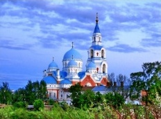
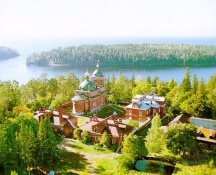
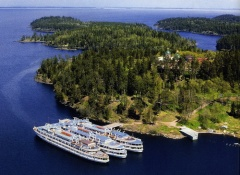
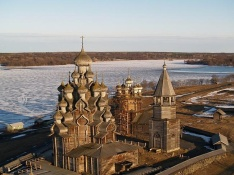
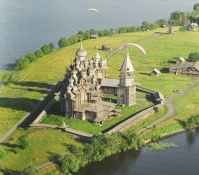

(812) 315-06-87
Круиз на Валаам на 1 день через Приозерск.
Стоимость: от руб. на чел.
Туры на Валаам с проживанием в гостинице «Зимняя». От трех дней.
Стоимость: от руб. на чел.
Тур на 2 дня. Новый Валаам - Миккели - Савонлинна.
Стоимость: от руб. на чел.
Большой выбор туров продолжительностью от 4х дней
Стоимость: от руб. на чел.
 Туры в Карелию. Туры выходного дня.
Туры в Карелию. Туры выходного дня.
Петрозаводск, Кижи, водопад Кивач, горный парк "Рускеала", загородный комплекс "Karjala Park"
Стоимость: от руб. на чел.
Поиск тура / круиза на Валаам
Найдено круизов: 251
| Даты | Дни | Рейс | Маршрут | Теплоход / Тур | Цена, руб |
| 13.05 (Пт) | 1 |
В
Ш
П
|
Санкт-Петербург - Валаам - Санкт-Петербург | Метеор | 5400 - 5800 |
| 13.05 (Пт) - 15.05 (Вс) 2016 г. | 3 |
В
Ш
П
|
Санкт-Петербург – Валаам – Санкт-Петербург | Виссарион Белинский | 8400 - 13600 |
Туры на Валаам и Кижи
Предлагаем Вам речные круизы на Валаам и Кижи с возможными заходами в Мандроги, Коневец, Пеллотсаари, Петрозаводск и Лодейное поле. Самые популярные речные круизы по Северо-западу России из Санкт-Петербурга — это традиционные «короткие» круизы ( 1-2 дня ) и речные туры средней продолжительности (3–5 дней) по Ладожскому и Онежскому озерам. Такие круизные туры организуются с мая по октябрь, отправление почти ежедневное (в будни и выходные дни) от причалов Речного вокзала Санкт-Петербурга.
    
Традиционные речные круизы на Валаам и другие острова Ладожского озера из Санкт-Петербурга на теплоходах различной комфортабельности:
Туры продолжительностью 1 день/2 ночи:
-
Санкт-Петербург-
Валаам-Санкт-Петербург, стоянка на острове Валаам около 12 часов, во время которой будут проведены две экскурсии по острову — «По скитам Валаама» и посещение Центральной усадьбы Спасо-Преображенского мужского монастыря. Структура таких круизов совершенно одинакова на всех теплоходах, весь круиз занимает около 36 часов, отправление теплоходов от причалов Речного вокзала почти ежедневное. -
Санкт-Петербург-Валаам-
Коневец-Санкт-Петербург , стоянка на Валааме 4–5 часов (одна экскурсия) затем переход до о. Коневец и пешеходная экскурсия по Коневскому монастырю. -
Санкт-Петербург-Валаам-
Пеллотсари-Санкт-Петербург , стоянка на Валааме до 6 часов (одна экскурсия), затем короткий переход по Ладожскому озеру (20 км) до о. Пеллотсари и пешеходная экскурсия по экологической тропе + отдых на пляже.
Туры продолжительностью 2 дня/3 ночи:
- Санкт-Петербург-Валаам-
Мандроги-Санкт-Петербург Санкт- Петербург-Валаам-Сортавала -Санкт-Петербург
Включают посещение о. Валаам с полной экскурсионной программой, и еще один день развлечения и экскурсий.
Огромное впечатление оставляют речные круизы с посещением сразу двух культовых туристических объектов — о. Валаам и о. Кижи, так называемые «кижские» круизы, продолжительностью 3 дня/4 ночи (Санкт-Петербург-
Круизы организованы практически одинаково (
Цены на туры зависят от комфортабельности кают, сезонности поездки (высокий сезон длится с середины июня до второй половины августа), а также дня недели: наиболее недорогие путевки — на круизы буднего дня. Продажа круизов начинается за 8–9 месяцев до начала летней навигации (круизы на Валаам проводятся с мая по октябрь) и дает возможность продажи путевок с предоставлением скидок раннего бронирования.
- Существуют и более короткие туры на Валаам — программа «Валаамский экспромт», которая занимает около 14 часов, начинается утром с путешествия на автобусе из
Санкт-Петербурга в Приозерск, затем следует часовой трансфер по Ладожскому озеру на метеоре (прибытие в монастырскую бухту), большая экскурсионная программа по острову Валаам, включающая посещение Центральной усадьбы монастыря, Никольского скита, посещения концерта певчих монастыря, в перерыве — обед в трапезной монастыря, затем — обратная дорога и возвращение вСанкт-Петербург около 22 часов. - Многодневные экскурсионные туры на Валаам с проживанием в гостинице «Зимняя» — уникальная возможность ознакомиться с островом очень подробно. Туристы и паломники участвуют в самой полной экскурсионной программе, включающей, в том числе, и дополнительные водные лодочные маршруты по внутренним водоемам. Возможно и посещение служб в храмах острова.
- Гостям
Санкт-Петербурга предлагается принять участие в программах «круиз+экскурсия», включающих в себя два дня экскурсионной программы вСанкт-Петербурге в день отправления и день прибытия круиза по групповым ценам. - Экскурсионный тур
Санкт-Петербург — Валаам возможен и в период между навигациями — из Сортавалы на теплоходе на воздушной подушке или вертолетные туры — на Рождество и Пасху, если на это есть благословение Владыки.
Историческая справка об острове Валаам
Остров Валаам (фин. Valamo — высокая, горная земля) — самый большой из островов Валаамского архипелага, расположенного в северной части Ладожского озера. Уникальные природные ландшафты. В 10 веке
В настоящий момент Монастырь переживает расцвет. В монастыре и скитах проживает около 200 монахов. Энергично идут реставрационные работы. Священноигуменом обители является патриарх Московский и Всея Руси Кирилл. Экскурсионный тур на Валаам позволит Вам познакомиться с достопримечательностями острова и посетить его святыни.
Больше информации о Валааме, Кижах, Соловках — духовно-культурных центрах России.
Наши менеджеры доступны по номерам:
(812)315-06-87 (812)315-97-46 (812)712-46-29 (812)575-89-04